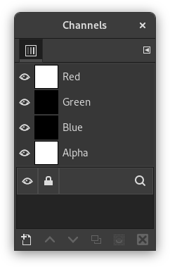
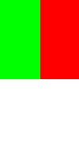
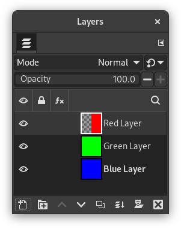
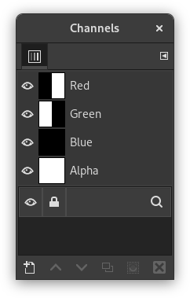
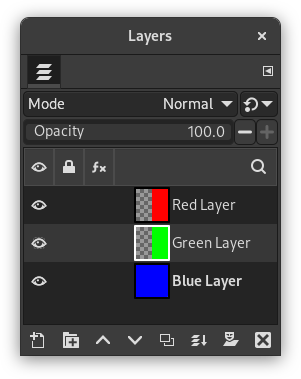
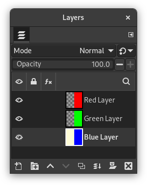
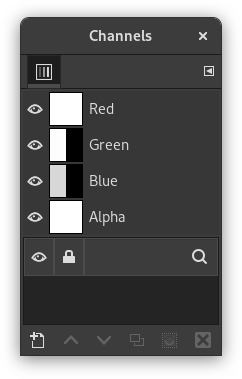
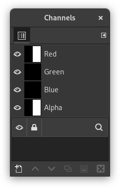

Table of Contents
You can think of layers as a stack of slides. Using layers, you can construct an image of several conceptual parts, each of which can be manipulated without affecting any other part of the image. Layers are stacked on top of each other. The bottom layer is the background of the image, and the components in the foreground of the image come above it.


There is no limit to the number of layers an image can have, only the amount of memory available on the system. It is not uncommon for advanced users to work with images containing dozens of layers. You can group layers to make your work easier, and there are many commands to handle layers.
The organization of layers in an image is shown in the Layers dialog. How it works is described in detail in the Layers Dialog section, but we will touch some aspects of it here, in relation to the layer properties that they display.
Each open image can have one or more active drawables. A “drawable” is a GIMP concept that includes layers, but also several other items, such as channels, layer masks, and the selection mask.
Basically, a “drawable” is anything that can be drawn on with painting tools. If a layer is currently active (i.e. it is selected), it is shown highlighted in the Layers dialog. If only one layer is selected, its name is shown in the status area of the image window.
To activate a layer click it. To select multiple layers, use the common key modifiers Shift for selecting a range, and Ctrl for adding or removing one layer from the selection. If none of the layers are highlighted, it means the active drawable is something else than a layer.
The main menu has a Layer submenu containing commands that affect the active layer or layers of the image. The context menu of the Layers Dialog has even more commands. This menu can be accessed by right-clicking on a layer.
There are several types of layers. The most common is the raster layer, which is the default. Other layer types are text layers, vector layers and link layers. Each of these have extra properties and commands specific to their purpose.
Each layer in an image has a number of important attributes:
- Name
-
Every layer has a name. This is assigned automatically when the layer is created, but you can change it. You can change the name of a layer either by double-clicking on it in the Layers dialog, or by right-clicking there, and then selecting in the menu that appears.
- Presence or absence of an alpha channel
-
An alpha channel encodes information about how transparent a layer is at each pixel. It is visible in the Channels dialog: white is complete opacity, black is complete transparency and gray levels are partial transparencies.
The background layer is special. If you have just created a new image, it only has one layer, which is the background layer. If the image has been created with an opaque Fill type, this one layer has no Alpha channel. To get a background layer with transparency, either create your new image with a transparent Fill type, or you use the Add an Alpha Channel command.
If you add a new layer, even with an opaque Fill type, an Alpha channel is automatically added to the layer.
Every layer other than the bottom layer of an image automatically has an Alpha channel, but you can't see a grayscale representation of the alpha values. See Alpha in Glossary for more information.
Figure 8.2. Alpha channel example: Basic image
Original image.

The image has three layers painted with pure 100% opaque Red, Green, and Blue. The current layer is the red one.

In the Channels dialog, the added Alpha channel is white because the image is not transparent since there is a 100% opaque (red) layer. As the current (red) layer is 100% opaque, there is no green and no blue so their corresponding channels are black.
Figure 8.3. Alpha channel example: One transparent layer

The left part of the first layer has been made transparent (via Section 2.2, “Rectangle Selection”, then → ).

The second layer, green, is visible.

The Alpha channel is still white, since there is an opaque layer in this part of the image.
Figure 8.4. Alpha channel example: Two transparent layers

The left part of the second layer has been made transparent.

The third layer, blue, is visible through the first and second layers.

The Alpha channel is still white, since there is an opaque layer in this part of the image.
Figure 8.5. Alpha channel example: Three transparent layers

The left part of the third layer has been cleared. In this case, the Clear command works like the Eraser and uses the Background color of Toolbox.

The left part of the third layer is opaque, because the background layer has no Alpha channel.

The Alpha channel is still white.
Figure 8.6. Alpha channel example: Alpha channel added to the Background

We used the → → command on the (blue) background layer. The left part of the image has become fully transparent and has the color of the page on which the image is shown.

The left part of the blue layer has become transparent.

The left part of the Alpha Channel thumbnail is black (transparent) in the Channels dialog.
- Layer mode
-
The layer mode is determined by the image mode (see previous section), and the presence or absence of an alpha channel. GIMP currently supports RGB, RGBA, Gray, GrayA, Indexed, and IndexedA.
The main reason this matters is that some filters (in the menu) only accept a subset of layer modes, and appear disabled in the menu if the active layer does not have a supported mode. Often you can rectify this either by changing the mode of the image, or by adding or removing an alpha channel.
-
 Visibility
Visibility
-
You can hide a layer from affecting the end result of your image by clicking on the eye symbol in the Layers dialog. This is called “toggling the visibility” of the layer. Most operations on an image treat toggled-off layers as if they do not exist.
When you work with images containing many layers, with varying opacities, you often can get a better picture of the contents of the layer you want to work on by hiding some of the other layers.
![[Tip]](images/tip.png)
Tip If you Shift-click on the eye symbol, this will cause all layers except the one you click on to be hidden.
- Active layer
-
Usually, you activate a layer, to work on it, clicking it in the layer list. When you have a lot of layers, finding which layer an element of the image belongs to is not easy: then, press Alt and click with Mouse wheel on this element to activate its layer. The available layers will be looped through (starting from the upper one) while the Alt is held and the picked layer will be temporarily displayed in the status bar.
-
 Layer Lock Settings
Layer Lock Settings
-
If you click to the right of the eye icon, you can select the lock settings for the layer.
-
 Layer Effects
Layer Effects
-
Directly to the left of the image thumbnail, you will see the Layer Effects icon if that layer has effects added to it.
See Using Layer Effects for more details.
- Size and boundaries
-
In GIMP, the boundaries of a layer do not necessarily match the boundaries of the image that contains it. When you create text, for example, each text item belongs to its own separate layer, and the layer size is automatically adjusted to contain the text and nothing more.
Also, when you create a new layer using cut-and-paste, the new layer is sized just large enough to contain the pasted item. In the image window, the boundaries of the currently active layer are shown outlined with a black-and-yellow dashed line. When more than one layer is selected, it will show an outline of the square that encloses all the selected layers.
The main reason why this matters is that you cannot do anything to a layer outside of its boundaries, unless you enabled Expand Layers in the Paint Tool Options. If this causes you problems, you can alter the dimensions of the layer using any of several commands that you can find near the bottom of the menu.
![[Note]](images/note.png)
Note The amount of memory that a layer consumes is determined by its dimensions, not its contents. So, if you are working with large images or images that contain many layers, it might pay off to trim layers to the minimum possible size.
- Opacity
-
The opacity of a layer determines the extent to which it lets colors from layers beneath it in the stack show through. Opacity ranges from 0 to 100, with 0 meaning complete transparency, and 100 meaning complete opacity.
- Mode
-
The Mode of a layer determines how colors from the layer are combined with colors from the underlying layers to produce a visible result. This is a sufficiently complex, and sufficiently important, concept to deserve a section of its own, which follows. See Section 2, “Layer Modes”.
- Layer mask
-
In addition to the alpha channel, there is another way to control the transparency of a layer: by adding a layer mask, which is an extra grayscale drawable associated with the layer. A layer does not have a layer mask by default: it must be added specifically. Layer masks, and how to work with them, are described much more extensively in the Layer Mask section.